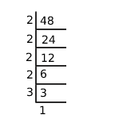

The LCM of two numbers is 48. The numbers are in the ratio 2:3 then the sum of numbers is?
Given LCM of two numbers = 48
48 can be written as powers of prime numbers as follows

48 = 2 4 × 3
So the numbers should contains powers of 2 and 3
Given the ratio between numbers is 2:3
x ⁄ y = 2 ⁄ 3
Let us write x and y in terms of powers of prime numbers 2 and 3 as below
x = 2m × 3 n
y = 2k × 3 l
then the ratio = 2:3
x ⁄ y = 2 ⁄ 3
then
2m × 3n ⁄ 2k×3l =
2 ⁄ 3
= 2 ⁄ 3
2 m − n × 3 n ⁄
3l = 2 ⁄ 3 then
2m −k ⁄ m l −n =
21 ⁄ 31 then
comparing on both sides
m − k = 1
m = k+1 (m>k)
l − n = 1
l = n +1 (l > n )
We know that LCM is the product of highest powers of prime numbers in the given numbers
LCM contains 4th order of 2 and 1st order of 3
maximum possible value for 2 can be of
m = 4 (m > k)
parallel l = 1 (l > n)
when m = 4, k = m − 1 = 4 − 1 = 3
when l = 1, n = l-1 = 1 − 1 = 0
Numbers are x = 2 m × 3 n = 2 4 × 30
= 16
y = 2 k × 3 l = 2 3 × 31
= 24
sum = x+y = 16+24 = 40.